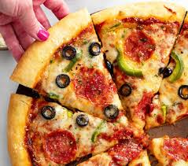

Pizza Recipe

Description
Nothing beats homemade pizza night!
This incredible pizza dough is easy to make and bakes to golden perfection for a crust that's crisp on the outside, and soft and pillowy on the inside. (If you're not a crust eater, that's about to change!)
Ingredients
- Meats: Pepperoni, Hamburger, Sausage, Bacon, Ham, Buffalo Chicken, BBQ Chicken, Chicken Tenders, Grilled Chicken, Pulled Pork, Capicola, Salami, Meatballs.
- Veggies: Onions, Peppers, Mushrooms, Tomatoes, Spinach, Broccoli, Banana Peppers, Jalapeno Peppers, Garlic, Basil, Leeks.
- Other: Pineapple, Olives, Mozzarella, Parmesan, Feta, Ricotta, Goat Cheese, Oregano, Thyme, Rosemary, Red Pepper Flakes, Marinara Sauce, Blue Cheese, Ranch, BBQ Sauce.
Steps
- Add the yeast to a small bowl with sugar and warm water (105-115°). Cover with saran wrap and let it sit for 5 minutes.
- In a medium bowl, add half of the flour, salt, and garlic powder. Stir to combine. Add the yeast mixture, oil, and gradually mix in remaining flour.
- Knead for 3-5 minutes and transfer to a clean bowl. Cover with saran wrap and let rise until doubled by half, (30-60+ minutes), or overnight in the fridge. Gently punch it down and knead 5 times. Spread into a 12-inch circle and transfer to a preheated, floured pizza pan (or stone).
- Use a fork to poke holes in the crust to keep it flat while baking. Brush with olive oil, then top with sauce.
- Top with cheese and toppings. Bake in a preheated 450° oven for 13-15 minutes. Remove, slice, and serve!